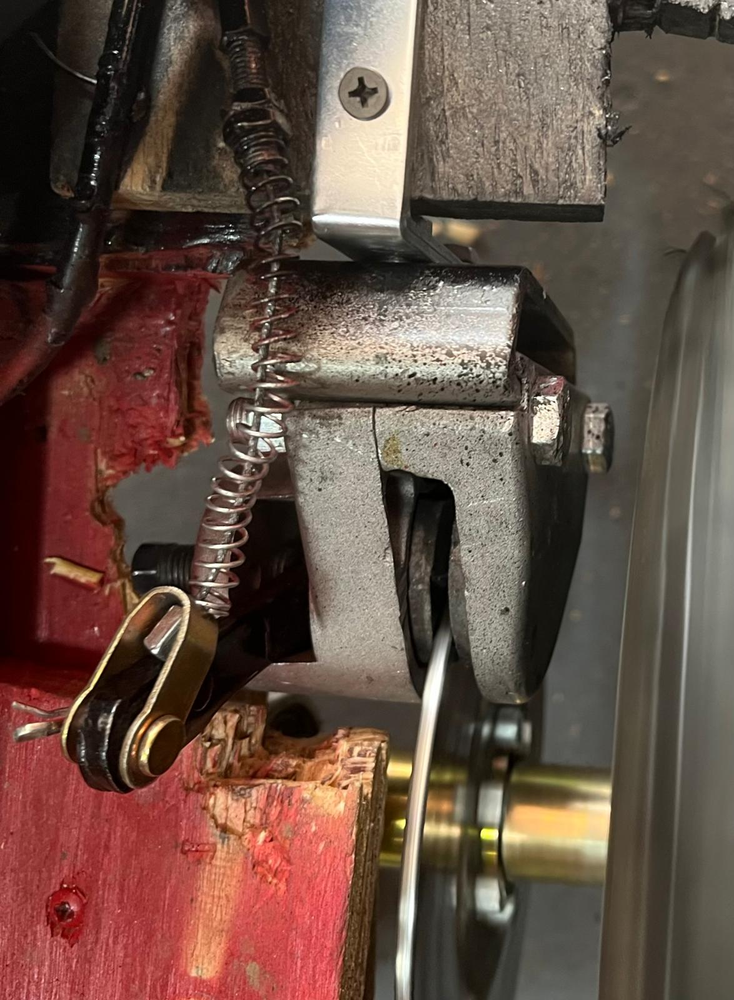

The go kart:
Objective
My goal was to construct a go-kart entirely from wood, a material not
typically used for this purpose. This unconventional choice allowed me
to explore principles of materials engineering.
Planning
Design Sketch: I began by drawing a basic outline of the go-kart to
conceptualize its structure.

Dimensioning: To determine exact measurements, I outlined the go-kart
dimensions directly on my floor using tape, ensuring a clear and
accurate layout.

I decided on specific dimensions (5 feet long by 3 feet wide) for the
go-kart.
After purchasing the necessary materials, I had the wooden pieces cut to
size.

The rear axle, essential for connecting the wheels and enabling their
rotation, was my first focus. Due to initial budget constraints, I
selected a cost-effective axle. However, this came with challenges:
- T8F chains were unavailable.
-
The clutch used on standard go-kart engines was incompatible with
T8F chains
Clutch Analogy:
Imagine you're on a merry-go-round. As it spins faster, you feel pushed
outward due to centrifugal force. Similarly, in a centrifugal clutch: As
the engine spins faster, centrifugal force pushes brake shoes outward.
These shoes grip the clutch housing, transferring power from the engine
to the wheels.
Proposed Solution for the Sprocket Issue
My first idea was to purchase a sprocket that could attach to the T8F
sprocket, combining its teeth with a 420 sprocket to achieve
compatibility with the clutch and chain system. (I just bolted the two
sprockets together)


Steering System
To address steering challenges, I first studied how a steering system
works:


I designed and 3D-printed a piece to stabilize the entire steering
assembly and prevent unnecessary movement.


Using the rack-and-pinion mechanism, I developed a method to translate
its movement into wheel turns for go karts:
When one side of the system was pulled during a turn, it caused the
corresponding wheel to turn inward, directing the go-kart appropriately.

Material Challenges
Because the plastic components I initially 3D-printed snapped under
weight, I purchased the same parts made out of steel for added
durability and functionality. I then purchased a giant piece of steel
square tube and had it cut to size. I then had this piece of tubing
weldded to the spindle mechanism.


Brakes

Every vehicle needs brakes—that's obvious. However, when it came to
go-karts, the options were limited. I initially purchased hydraulic
brakes, but over time they proved insufficient. So, I switched to
mechanical brakes. Both systems operate similarly in that they use two
steel plates to clamp onto a brake disc. The key difference is that
hydraulic brakes use fluid pressure to engage the pads, while mechanical
brakes use a direct mechanical linkage—one pad remains stationary as the
other is pushed against it.
STILL WORKING ON THIS PROJECT.....